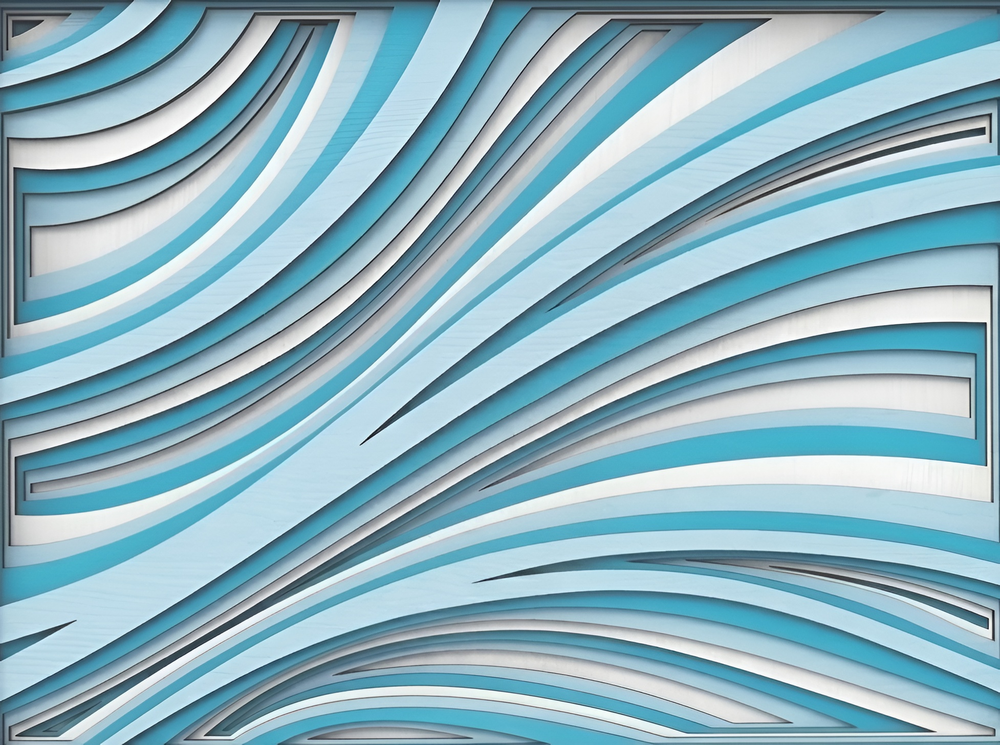

01

Cruz Azul
Relieve contemporáneo de la cruz celeste con ondas de resina y destellos cristalinos.

Colección Arte Católico
Relieve contemporáneo de la cruz celeste con ondas de resina y destellos cristalinos.

Fusión de pigmentos dorados y ondas texturizadas inspiradas en la luz solar divina.

Madera tallada con relieves dorados tradicionales y texturas orgánicas envejecidas.

Relieve violeta místico que evoca espiritualidad, penitencia y reflexión litúrgica profunda.
Representación clásica devocional del Sagrado Corazón con acabados esculpidos a mano.

Reinterpretación contemporánea en tonos violetas imperiales y destellos de pan de oro.

Composición escultórica de la cena del Señor, con detalles de relieves tridimensionales.